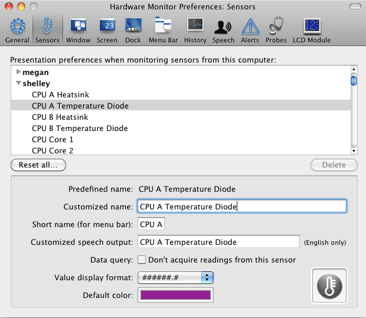
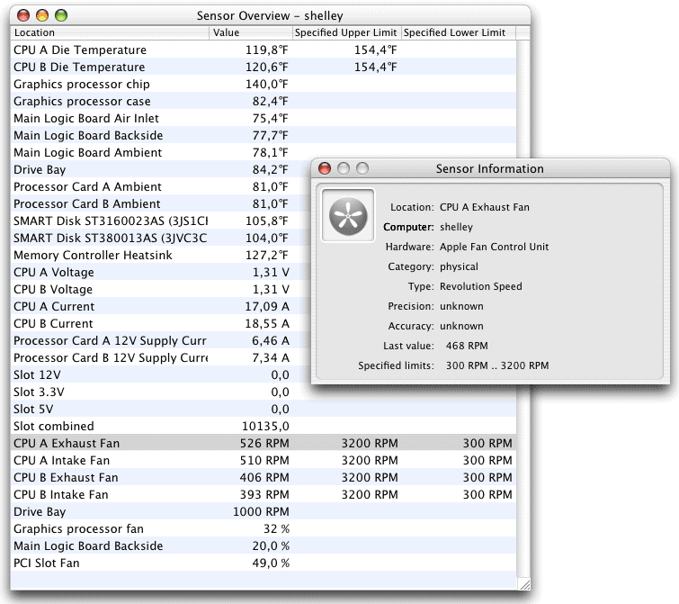
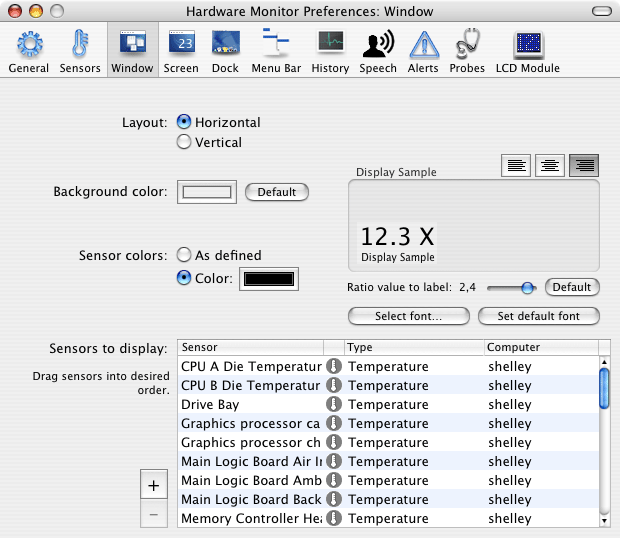
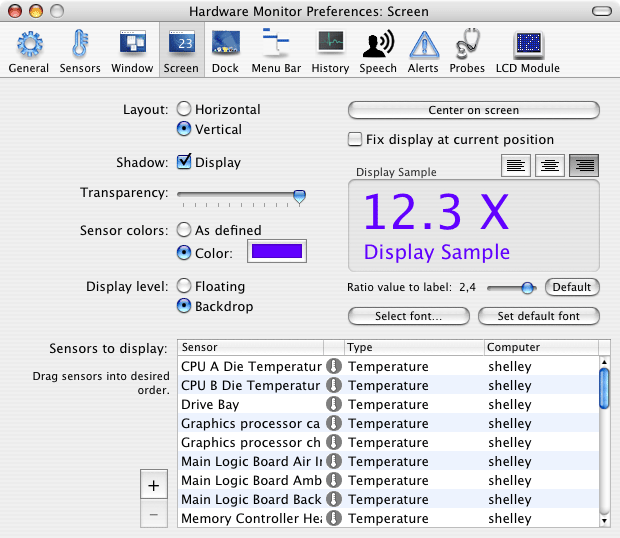
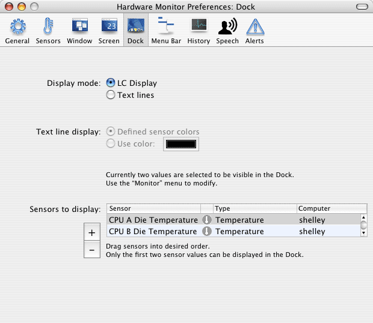
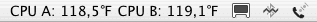
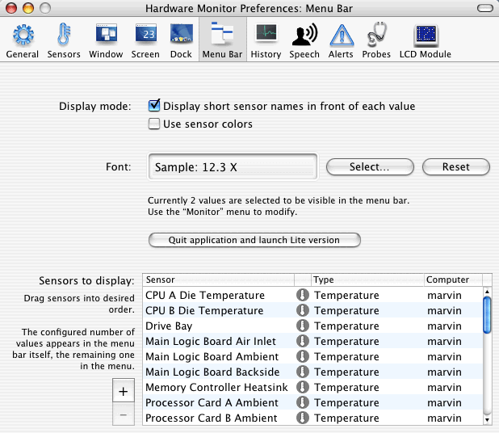

Displaying sensor data |
Under special circumstances, the normal readings of a sensor may be replaced by the display “---” (three dashes). It has the meaning “no value available”. Such a situation can occur when a sensor had been detected during the start of the application but currently has gone offline for some reason. Typical situations are:
If technically possible, the application will automatically reconnect to the sensor when it becomes ready again. No user intervention is necessary.
Each sensor has a set of general preferences which fundamentally define how readings should be displayed. Select the menu item Preferences… in the main menu or press ⌘+,. Open the pane Sensors. The application displays an overview of all sensors which had been monitored from this computer in the past. This includes all sensors of the local system and sensors of remote computers. The list is automatically sorted by computer names and sensor names.
Click on the triangles left to the computer names to disclose the sensor list of the selected computer. After selecting one of the sensors, its preference settings are displayed in the lower half of the window. For every sensor the following defaults can be set:
If the application detects that a sensor is no longer available on a particular computer, it will display a warning indicating the sensor is offline. This could happen for example when you replace a graphics card or a hard disk which was equipped with sensors. To finally delete preferences of a disconnected sensor, press the button Delete right below the table. When selecting a computer name, you can also delete the complete preferences set of a remotely monitored computer as long as that system is currently not connected to the local system.

If you have more than 20 or even more than 100 sensors online, it can be a tedious task to change preferences for them. Typical tasks for modifying all sensor settings in one single step can be executed using two special features:
If you haven't set any colors yet, the display color for each sensor will be black. By selecting the menu item Monitor > Set Colors for all Sensors, all currently defined color preferences will be replaced by a colorful palette of new settings that will show good results for most cases. Please note that all previously defined colors for all sensors monitored by the current computer will be overridden.
Different aspects of the sensor presentation preferences can be reset by selecting the menu item Monitor > Reset preferences for all Sensors…. After selecting the item, you can choose which settings should be reverted to factory defaults:
You can also use the button Reset all… in the Sensors pane of the Preferences window to access the reset panel.
The monitor program can display detailed technical information about each sensor found. This includes the following items:
To show this data, first open the sensor overview by selecting the menu item Window > Show overview or press the key combination ⌘+1. Then click on a sensor line in the table. The detail information will be displayed in an additional window.
The overview table is for quick orientation only. The order of sensors and the display formats cannot be changed.

To display the current readings of sensors, you can either select a default window or a transparent display (or both). To open the default window select the menu item Window > Show sensor window or press ⌘+2. To close it, click the standard close button of the window.
The defaults for the standard window are set in the pane Window of the preferences function. The placement of readings can be varied by selecting a horizontal or vertical layout preference.The window can either use the colors defined for each sensor, or use a common color that can be set here. Additionally you can set the background color. Font type and font size can be modified after pressing the button Select font…. Note that only type and size of a font can be set, other parameters are ignored. Using the three buttons above the sample area you can also change the text alignment for the readouts. The little slider Ratio value to label defines in what size proportion the font for the sensor label should be displayed in relation to the sensor value. By default, the labels are 2.4 times smaller than the reading. You can select a different value between 1.0 and 2.5, or press the button Default to return to the standard ratio.

Which sensors should be displayed in the window can be defined by the table in the lower half of the panel:
All changes will be effective immediately and will become visible with the next update interval.
The screen display is a special window which doesn't contain any buttons or other elements selectable by the user. It only shows the current values, either hovering transparently "over" the contents of the screen, or "under" all windows directly on the Desktop background. You can move the screen display by grabbing the displayed text by the mouse and dragging it to a different position on screen, holding down the mouse button.
To display the screen display, select the menu item Window > Show screen display or press ⌘+3. With the menu item Window > Hide screen display or by repeating the key combination the window will be closed again.

The defaults for this display are set in the pane Screen of the preferences function. The placement of readings can be varied by selecting a horizontal or vertical layout preference. Additionally Transparency and the use of a Shadow can be set. The display can either use the colors defined for each sensor, or use a common color that can be set here. The display can either be floating or be shown as a backdrop window. Font type and font size can be modified after pressing the button Select font…. Note that only type and size of a font can be set, other parameters are ignored. Using the three buttons above the sample area you can also change the text alignments for the readouts. The little slider Ratio value to label defines in what size proportion the sensor label should be displayed in relation to the sensor value. By default, the labels are 2.4 times smaller than the reading. You can select a different value between 1.0 and 2.5, or press the button Default to return to the standard ratio.
The button Center on screen causes the display to be moved back to the center of the main screen. This feature can be helpful if you have made modifications to the display which moved it out of the visible part of the screen. Checking the option Fix display at current position makes sure you cannot move the screen display by mistake, e.g. when you inadvertantly hit it with the mouse cursor while moving other objects on your Desktop.
To select the sensors that should be displayed and to change their order, use the table Sensors to display in the fashion mentioned earlier.
One or two readings can optionally be displayed in the Dock tile of the application. Select between one of the following modes:
Which sensors will be displayed in which fashion can be set with the preferences window. Open the Dock pane. The application can show values either in style of an LC display or by using one or two text lines. The text lines can be displayed with a common color or by using the defined sensor colors. To select the sensors that should be displayed and to change their order, use the table Sensors to display in the fashion mentioned earlier.

Readings can also be displayed in the menu-bar of Mac OS X. The output will be visible right to the menu items of the currently running program and left to the system's own menu extras. The following picture shows an example:

The menu bar itself can contain no, one, or up to eight readings. The rest of the sensors will be displayed in an associated menu when the menu-bar item is clicked in its active area. You can select between one of the following modes of operation:
You should avoid to display too much readings in the menu-bar. If your screen is not wide enough, Mac OS X will automatically remove the entire menu section of the monitor application when another program needs the space to display its menu.
To further configure the items displayed in the menu-bar, open the section Menu Bar in the preferences window. By setting the checkmark Display short sensor names in front of each value you define the preference, whether only the reading itself, or additionally the short name defined for each sensor should be visible in the bar. The option Use sensor colors can be switched on to have the readings be displayed in their defined sensor colors instead of the usual black.
The table in the lower area allows you to define the sensors that should be displayed. To make sure a value is displayed in the menu-bar itself and not in the menu that originates from it, you'll have to drag the sensor to the first or second position of the table. Performing table operations is done the same way as discussed earlier.

These preferences will automatically become active for the Lite version of the application. The Lite version is capable of displaying readings in the menu-bar only, without needing space in the Dock or other parts of the screen.
You can easily switch between the full version and the Lite version by pressing the button Quit application and launch Lite version.